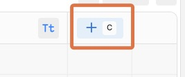

Portfolio Website Chatbot with Botpress
Introduction
Welcome! In this assignment, you’ll create an LLM-powered chatbot using Botpress and embed it into your portfolio website that you created in a previous session.
Your completed chatbot will be able to:
- Answer CV/Resume Questions - Provide information about your background using uploaded CV data
- Share Course Information - Provide info about the Graph Courses GenAI syllabus and curriculum details
- Collect Visitor Information - Gather names and emails from interested visitors for showcase day registration
Part 1: Setting Up Your Botpress Account and Creating Your Bot
- Create Your Botpress Account:
- Go to botpress.com
- Sign up for a free account using your email (Note: Botpress provides $5 in free credits, which should cover over 1000 messages on the default models. But for serious use, you will need to add credit to your account)
- Verify your email address if needed
- Create a New Bot:
- Once logged in, click “Create Bot”
- Name your bot something like “Portfolio Assistant” or “[Your Name] Course Bot”
- Follow the instructions to open the bot in the studio
Your bot will use an “Autonomous Node”, which means you can define your AI agent’s purpose and behavior in just a few lines of text.
Set Bot Instructions:
- In the main configuration area, find the “Instructions” field
- Enter instructions like:
You are a portfolio assistant for a Generative AI course student. Your main tasks are: - Answer questions about the student's CV and background using the knowledge base - Provide information about the Graph Courses GenAI syllabus and curriculum based on your knowledge base - After answering a users question, politely ask them whether they might be interested in our upcoming showcase event on Friday June 27th at 3pm GMT or Sunday June 29th at 5pm GMT - If they express interest, you will collect their name and email for registration and record those in the Attendees table tool. Be friendly, professional, and informative. Always try to be helpful while staying focused on these core topics. For other topics, politely decline to answer.
Part 2: Set up the Knowledge Base
- Navigate to Knowledge Base:
- Find the “Knowledge Base” section under the “Instructions” section
- Drag and drop your CV into the upload box. (If you don’t want any of your personal information online, you can use a fake example CV from the internet, like here: https://www.careers.ox.ac.uk/files/traditional-cv-examplepdf)
- Download the syllabus from: https://drive.google.com/file/d/1NV-Mo2UgXQwdTu_Jv-HtCVnB9Pf2Grng/view, and upload it to the knowledge base.
Part 3: Set Up Data Collection
Create Attendees Table Structure:
- On the Botpress sidebar, click on the Tables icon.
Click on the New Table button at the top left and call it something like “Attendees”, then click to Save
Click the new column icon to add the following two columns, leaving all settings as default
- Name

Configure Collection:
- Return to the main configuration area, by clicking on the “Main” icon on the left sidebar
- Scroll down to the Tools section under Knowledge Base
- Click on the Add Tool plus icon
- Click on Tables then the Attendees table, then “Create Rows”. This gives your bot the ability to create rows in that table.
Part 4: Testing and Publishing Your Bot
- Use the Test Chat:
- The Botpress interface has a test chat panel on the right side of the screen
- Try asking questions about:
- Your background (“Tell me about the educational background of [your name]”)
- Course content (“What topics are covered in the GenAI course?”)
- The bot should interrupt at some point to ask if you might be interested in the event.
- Give your email and name, then check the Attendees table to see if the bot was successful in adding your information.
- Publish:
- Click “Publish” button in the top-right corner
- Wait for the publishing process to complete
- Get Embedding Code:
- After publishing, go to “Share”, also in the top-right corner
- Select “Configure”
- Find the “Chat Bubble” section
- Copy the two script lines that will look similar to this:
<script src="https://cdn.botpress.cloud/webchat/v2.4/inject.js"></script> <script src="https://files.bpcontent.cloud/2025/05/27/14/20250527145803-WFVSK7BL.js"></script>
Part 5: Embedding Your Bot on Your Website
Part 5A: Add Bot to Your Portfolio
- Access Your GitHub Repository:
- Go to your GitHub Pages repository where your portfolio is hosted
- Open the
index.htmlfile for editing
- Insert the Bot Code:
- Paste the two script lines you copied from Botpress right before the closing
</body>tag. This will be near the end of the document.
<script src="https://cdn.botpress.cloud/webchat/v2.4/inject.js"></script> <script src="https://files.bpcontent.cloud/2025/05/27/14/20250527145803-WFVSK7BL.js"></script> </body>- If you do not feel comfortable making this change yourself, you can ask an LLM to do it for you.
- Paste the two script lines you copied from Botpress right before the closing
- Commit and Deploy:
- Save your changes to the
index.htmlfile - Commit the changes to your GitHub repository
- Your live site will update automatically (this may take 3-5 minutes)
- You can track the status of your deployment by clicking on the “Actions” tab in the menu of the GitHub repository page
- NOTE: Even after the site is done deploying, you may need to refresh the page a few times to see the bot appear, because your browser may be loading a cached version of the page.
- Save your changes to the
Part 5B: Test Live Integration
- Visit Your Live Site:
- Go to your GitHub Pages URL
- Look for the chat bubble (usually appears in the bottom-right corner)
- Test Full Functionality:
- Try the same tests you did before, but now on your live website
- Ensure the bot loads properly and responds correctly
- Verify the registration flow works in the live environment
- Making changes to your bot:
- WATCH OUT: If you make any changes to your bot, be sure to click on “Publish” again in the top-right corner to save your changes.
Part 6: Optional - Customize the Appearance of Your Bot
Navigate to the Customize Dashboard: To customize the appearance of your bot, again click on the “Share” button in the top-right corner then select “Configure”. Make sure you are in the “Chat Bubble” section, then under the “Appearance and Theme” section, click on “Edit on Dashboard”.

Customize the Appearance: On this page, under the “Theme” section, you can change the color and font, and under the General section you can change the name of the bot, a description, an icon and a composer placeholder.
Part 7: Submission
To submit:
- Upload a screenshot of your chatbot ‘in action’ on the graph courses website in the upload box.
- Paste a link to your website in the comments section.